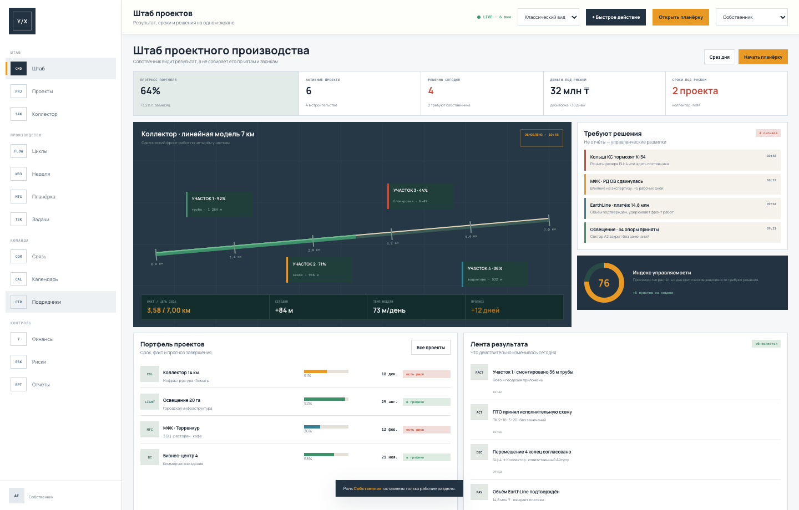
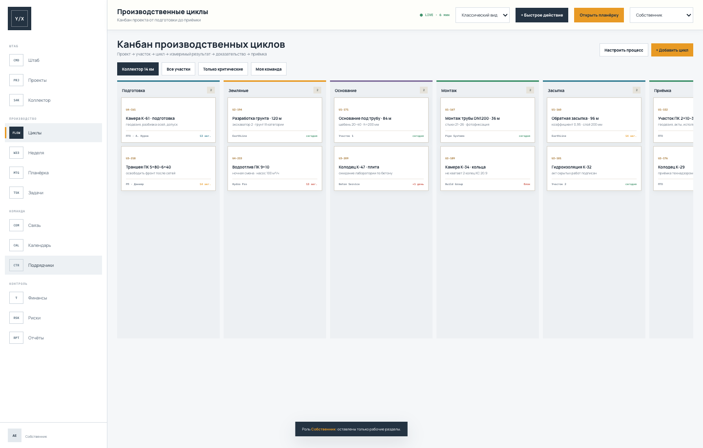
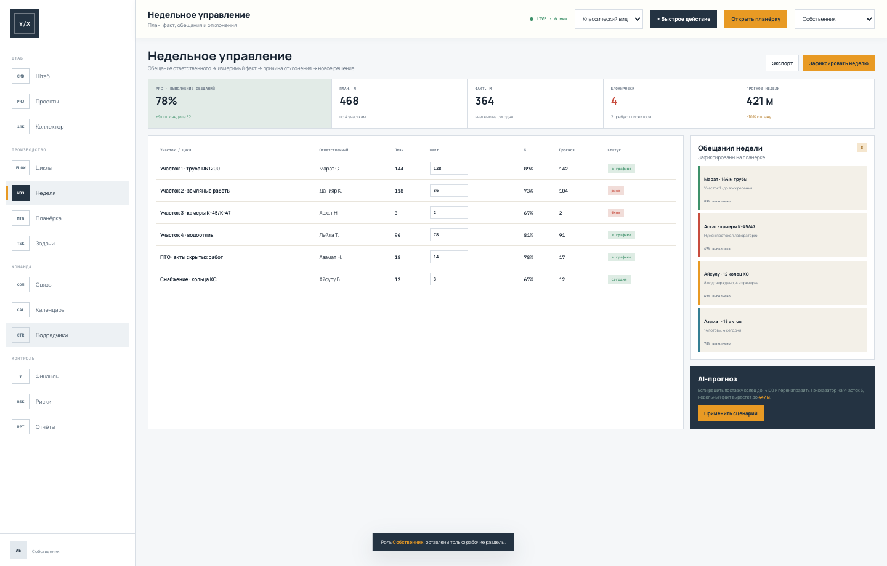
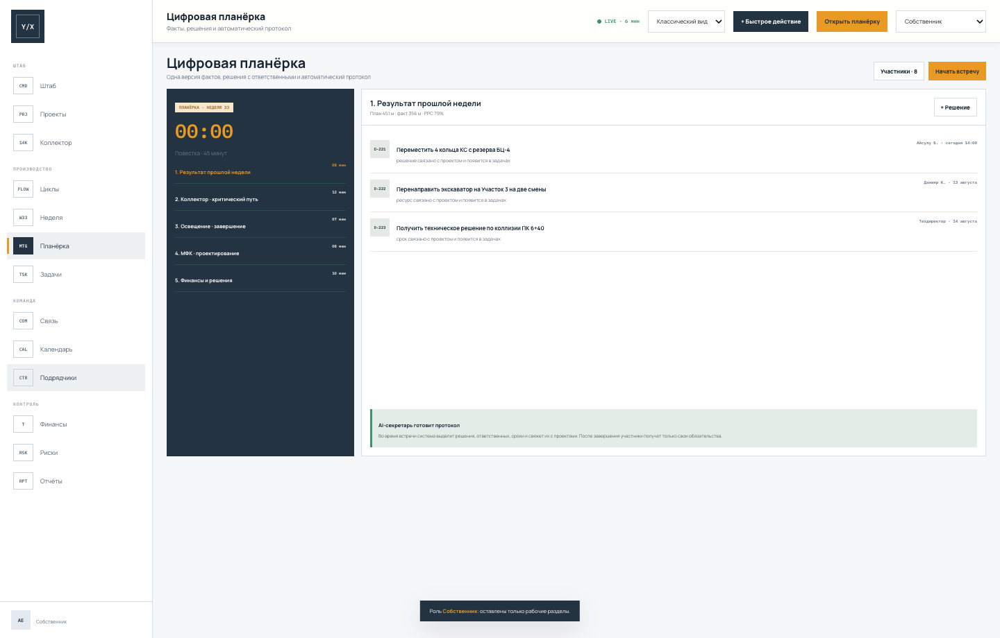
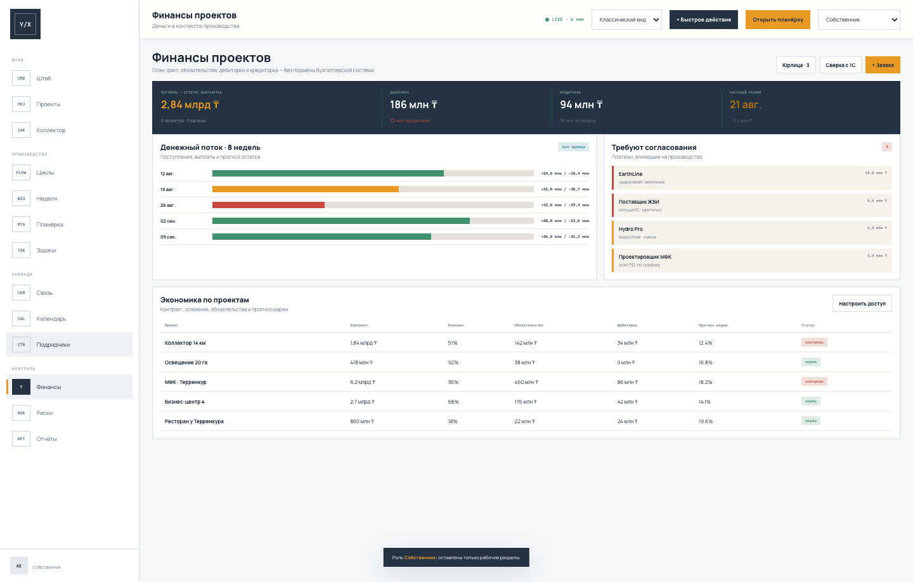

Внутренняя система управления проектным производством ТОО YARX: проекты, участки, циклы работ, недельный план/факт, задачи, финансы и цифровые планёрки — без потерь информации в WhatsApp.
Без ежегодной лицензии Pllato. Система передаётся Заказчику.
ядро и полный запуск
сотрудников back-office
по контрольным результатам
YARX реализует проекты полного цикла: концепт, рабочее проектирование, разрешительная часть, строительство и ввод. На объектах одновременно работают разные специализированные подрядчики, а внутренняя команда координирует качество, сроки, финансирование и конечный продукт.
01Подрядчиков невозможно и не нужно заставлять работать в новой системе. Контур нужен прежде всего внутренней команде YARX.
02Решения, обещания и файлы смешиваются с перепиской. На планёрке факты приходится собирать заново.
03Собственнику важны готовые километры, участки, сроки и конечная дата, а не количество людей подрядчика.
01 · PROJECTПроектКонечный продукт, дата, бюджет и владелец.
02 · SECTIONУчастокДекомпозиция 7 км или здания на зоны.
03 · CYCLEЦиклЗемля, основание, монтаж, засыпка, приёмка.
04 · WEEKОбещаниеПлан недели с ответственным и фактом.
05 · PROOFДоказательствоОбъём, фото, комментарий и контроль.
06 · DECISIONРешениеВлияние на срок, деньги и следующий шаг.
Не пытаемся сразу оцифровать весь объём строительной бумаги. Сначала создаём управляемый производственный ритм: проект → участок → цикл → недельный результат → решение. Документы прикладываются к нужному циклу, но не становятся центром системы.
Портфель, прогресс, прогноз сроков, деньги под риском и решения, которые нужны сегодня.
Инфраструктура, коммерческие здания, девелопмент и эксплуатация в единой модели.
Проект → участок → цикл. Обязательные поля, роли, уведомления и условия перехода.
Обещание ответственного, измеримый факт, причина отклонения, прогноз и PPC.
Одна версия фактов, повестка, таймер, решения, ответственные и автоматический протокол.
Поручения из проектов, планёрок, календаря и чатов со сроком и результатом.
Проектные группы, файлы и голосовые внутри компании вместо личного WhatsApp.
Контрольные точки, поставки, инспекции, согласования, встречи и зависимости.
План/факт, обязательства, платежи, дебиторка, кредиторка и прогноз разрыва.
Ранние сигналы, влияние, владелец, сценарий реакции, предписания и контроль.
План и факт фиксирует внутренний ответственный; рейтинг срока, качества и дисциплины.
Срезы собственника, директора проекта, ПТО и финансов без ручной сборки.
01Собственникпортфель и решения02Директор проектасрок и экономика03Руководитель проектациклы и команда04ПТО / контрольфакт и качество05Финансыплатежи и обязательстваВНЕШНИЙ КОНТУРПодрядчики и поставщикиПродолжают работать привычно. В YARX Control их результат фиксирует назначенный сотрудник компании.
ЕДИНОЕ ЯДРОYARX ControlПроекты, циклы, факты, коммуникация, задачи, календарь, финансы и цифровой след решений.
УПРАВЛЕНИЕРуководство YARXВидит текущий результат, прогноз и управленческие развилки по всей группе проектов.
Демо показывает рабочую логику на реалистичном примере городского коллектора. Данные демонстрационные; при внедрении названия, статусы, роли, нормативы и отчёты согласуем с руководителями проектов YARX.

Привычный светлый сайдбар, крупные подписи, таблицы и карточки. Подходит для повседневной работы всей команды.
Компактная диспетчерская компоновка для большого экрана и быстрых управленческих срезов.




Километры, пикеты, камеры и участки отображаются как фактический фронт.
Система показывает влияние блокировок и предлагает переброску ресурсов.
После планёрки у каждого сотрудника остаётся своё обязательство и срок.
Видно, какой платёж удерживает фронт и к какому результату он относится.
Разработка идёт короткими согласованиями. Сначала фиксируем ядро на данных и процессах YARX, затем отдаём команде для реальной проверки и встраиваем правки стандартного пакета.
НЕДЕЛЯ 1Обследование и ядроПроекты, роли, участки, циклы, недельный ритм, финансы и прототип под процессы YARX.
НЕДЕЛЯ 2ПроизводствоКанбан, карточка проекта, план/факт, задачи, календарь, риски и подрядчики.
НЕДЕЛЯ 3Команда и контрольЧат, планёрки, протоколы, роли, отчёты и сквозные уведомления.
НЕДЕЛЯ 4Пилот и передачаТест на одном проекте, правки, обучение, развёртывание и финальная приёмка.
| Контур | Результат | Статус |
|---|---|---|
| YARX Control | 12 модулей, пять ролей, адаптивный web-интерфейс и два режима дизайна. | Включено |
| Настройка процессов | Статусы, обязательные поля, уведомления, отчёты и права под команду YARX. | Включено |
| Пилот | Запуск на одном реальном проекте с согласованными пользователями и данными. | Включено |
| Правки после пилота | Уточнения интерфейса и логики в рамках согласованного ядра стандартного пакета. | Включено |
| Развёртывание | Установка на сервере Заказчика либо согласованной инфраструктуре, передача доступов. | Включено |
| Полный ЭДО / BIM / 1С | Глубокие интеграции, ЭЦП, полный архив исполнительной документации и BIM-контур. | Отдельный этап при необходимости |
Эквивалент озвученного на встрече стандартного пакета $3 000. Без ежегодной лицензии Pllato. Сторонние тарифы сервера, каналов связи и внешних сервисов, если потребуются, оплачиваются их поставщикам напрямую.
Ответственный со стороны Заказчика; интервью с 2–3 руководителями проектов; пример недельного плана, перечня проектов, ролей и финансового среза.
Команда проводит планёрку по реальному проекту в системе, фиксирует недельный план, результат и решения без ручной сборки из WhatsApp.
Показываем демо, собираем обратную связь команды и фиксируем конфигурацию ядра перед предоплатой.